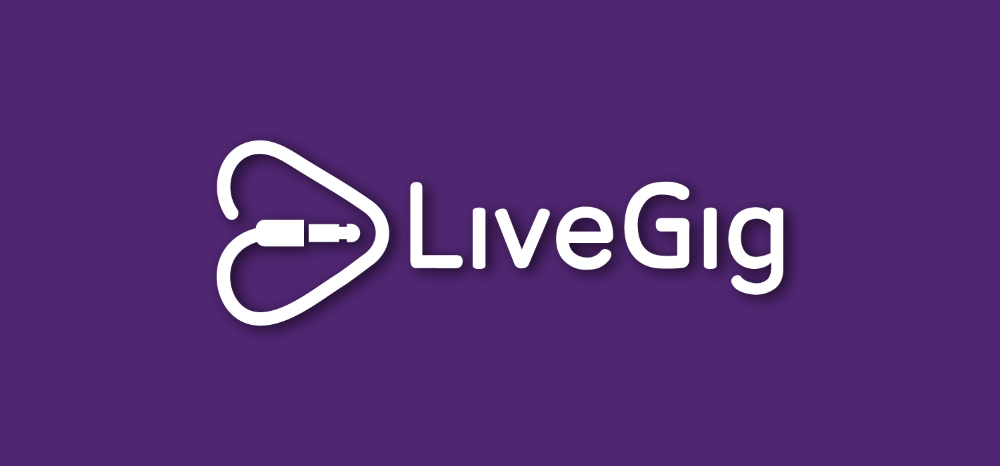
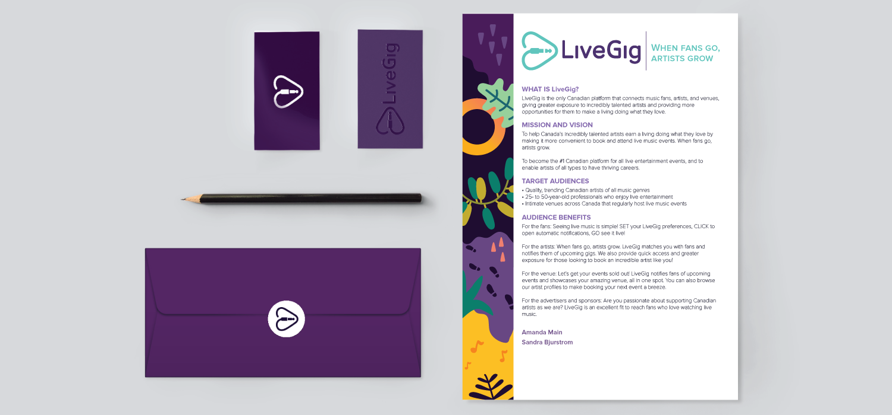
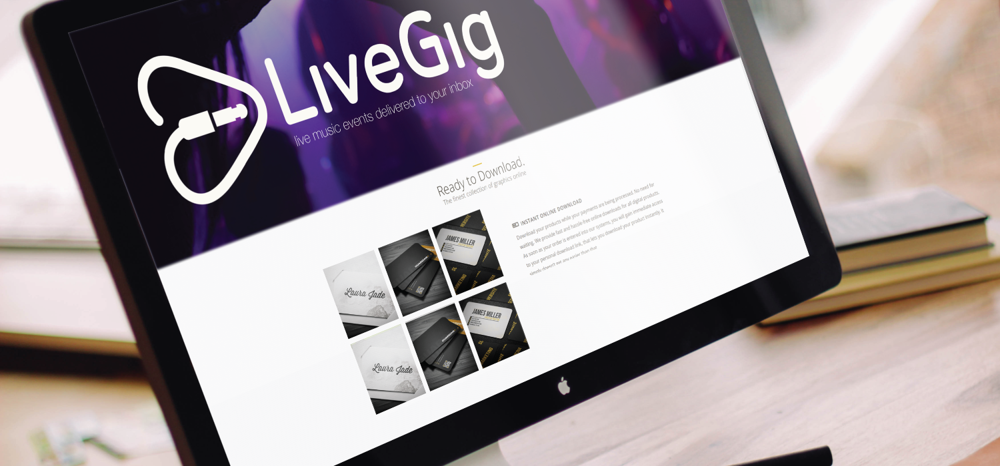
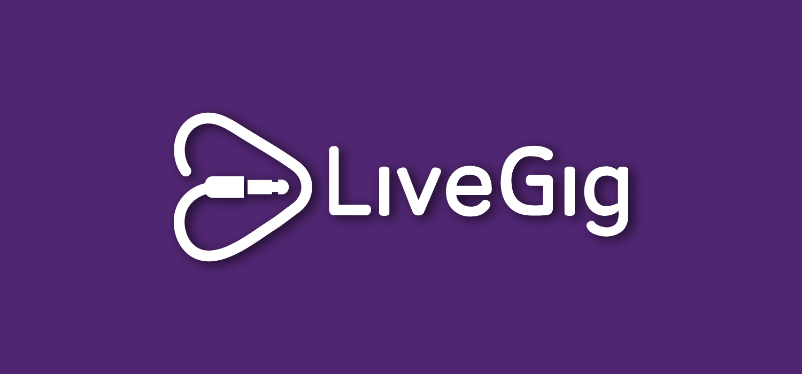
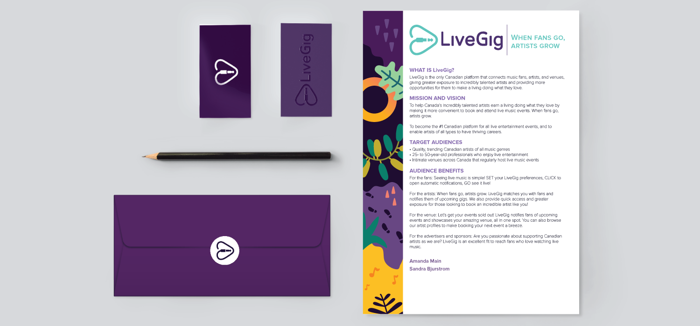
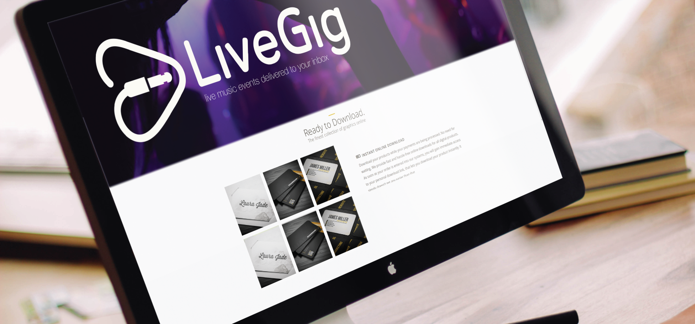

Upcoming Canadian platform for all live entertainment events, that enables artists of all types to have thriving careers. Platform that connects music fans, artists, and venues, giving greater exposure and incredible events.
I was asked to create a logo that has a "big company feel" but is simple. The icon portion of the logo is an obvious play button, but also a heart if you turn it to the side. The plug at the end tells the story of the company which is to unplug (from computers, daily chores, and other stress) and go out to enjoy superb new music in great venues where one feels homey.
When fans go, artists grow.
 




